Keep moving
Read the incoming fire and look for a gap. In Sunken Citadel, enemy ships close in while volleys cross the ruins.
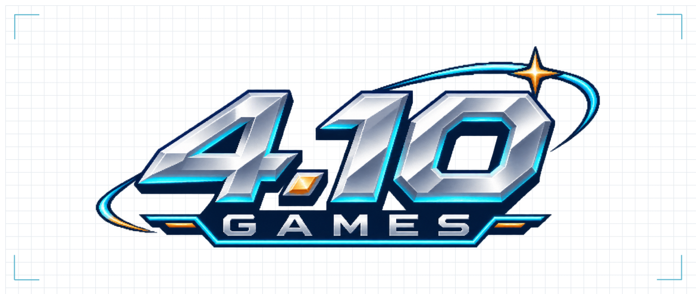
A new, original shoot-'em-up for Game Boy Advance. Fly through neon cities, coastal defences and deep space. Weave through enemy fire, build your firepower and find an opening.
The loop
Ginga Koro is built around direct, readable action. Move through enemy fire, build your weapon, and choose the right moment to spend a bomb or a Special.
Read the incoming fire and look for a gap. In Sunken Citadel, enemy ships close in while volleys cross the ruins.

Collect weapon power-ups. Hold and release fire on compatible ships to launch a charged attack like Shrike’s Rail Burst.
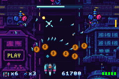
Use a bomb to clear incoming fire or turn a wave around with a Special like Volt’s Spread Storm. The homing missile add-on fires automatically until you lose a life.

The opposition
Fast interceptors cut across your path, formations close off escape routes, and armoured craft demand sustained fire. Bosses change their attacks as the fight progresses. In Glowspin Park, Volt Vortex sends expanding rings across a neon arena.
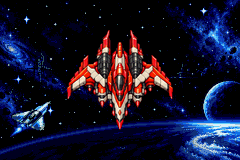
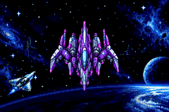
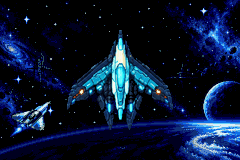
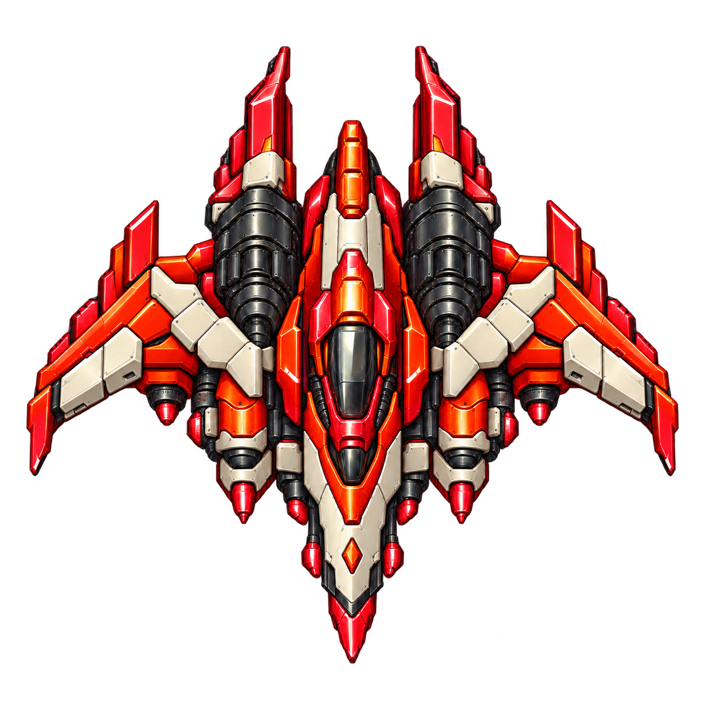
The campaigns
Fly between the radar dishes of Dead Air, through the crystal formations of Prismatic Veil and over the brass machinery of Clockwork Empire. Each campaign has its own stages, enemy roster and bosses.
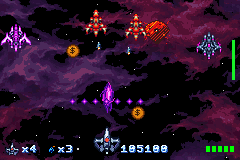
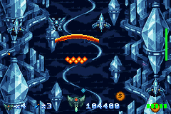
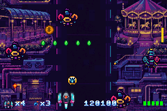
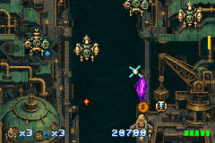
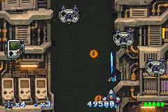
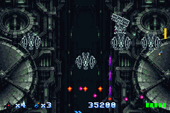
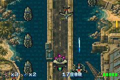
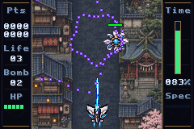
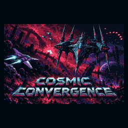
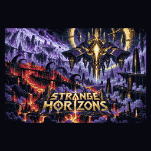
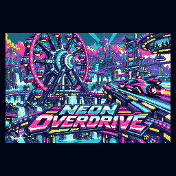
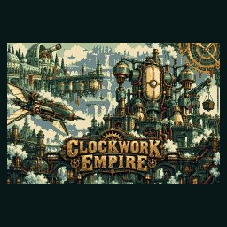
Thread through brass dockyards, mechanical estates and deep industrial shafts.
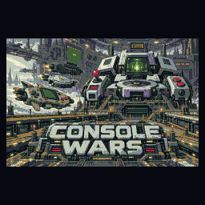
Fly over pixel art inspired by different eras of home and arcade hardware.
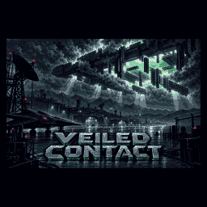
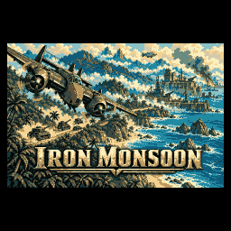
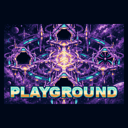
Try Danmaku’s bullet curtains and the descending enemy formations of Invaders Must Die!

Playground
Guide Kasane through expanding bullet rings in a narrow arena above the old town.
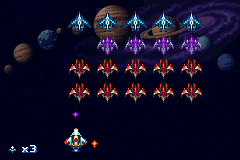
Slide Astra across the bottom of the screen and pick off the enemy grid before it reaches you. Later rounds bring in ships from across the campaigns.
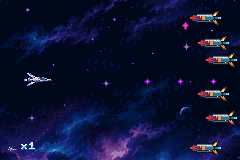
Take Astra into a six-wave side-scrolling fight: weave around incoming enemies and fire forward through deep space.

Take on a five-minute Neon Frontier throwback, presented in a compact four-shade green palette.
Pick your craft
Choose a campaign ship or take a classic craft into battle. Each ship has its own captain.
The classic ships trade speed, durability and maximum weapon power in different ways.
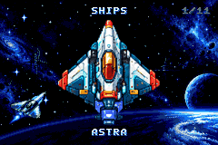

CLASSIC PRESET

CLASSIC PRESET
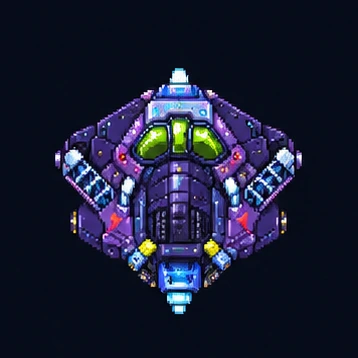
CLASSIC PRESET
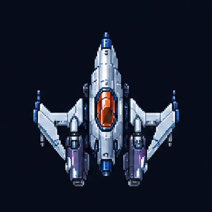
COSMIC CONVERGENCE

STRANGE HORIZONS
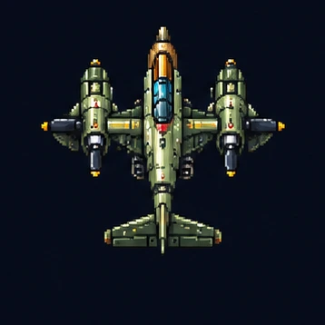
IRON MONSOON
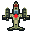
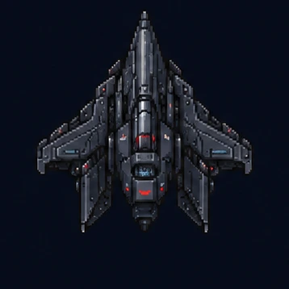
VEILED CONTACT

CLOCKWORK EMPIRE
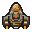
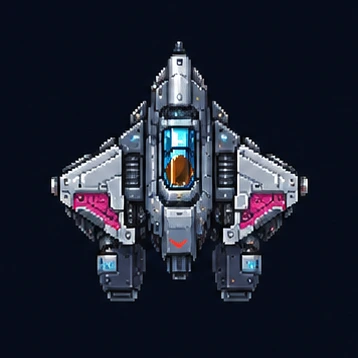
CONSOLE WARS

NEON OVERDRIVE
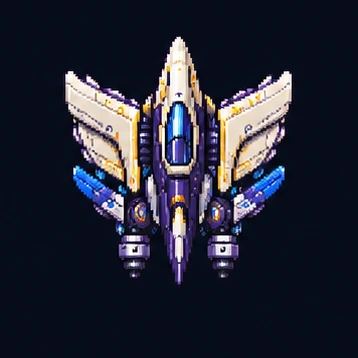
PLAYGROUND · DANMAKU
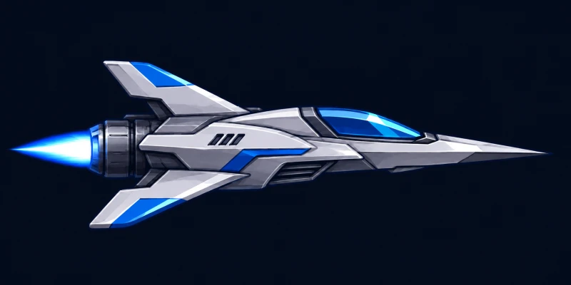
PLAYGROUND · TYPE X
Weapons
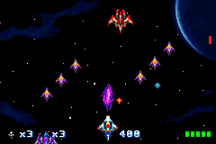
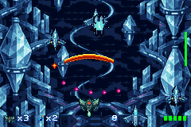
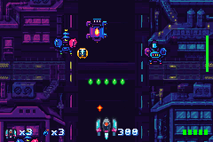
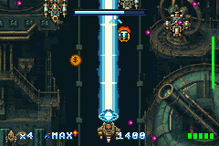
Made for the machine
Ginga Koro is designed and built with Codex in C++ using Butano. Every stage, sprite and effect has to fit the Game Boy Advance’s small screen and tight memory limits.
That constraint shapes the look: crisp native pixels in play, carefully composed scrolling backgrounds, and bullet patterns that remain readable when the screen fills with action.
A 4.10 Games project
Ginga Koro is an independent work in progress. More stages, more polish, and more to discover as development continues.